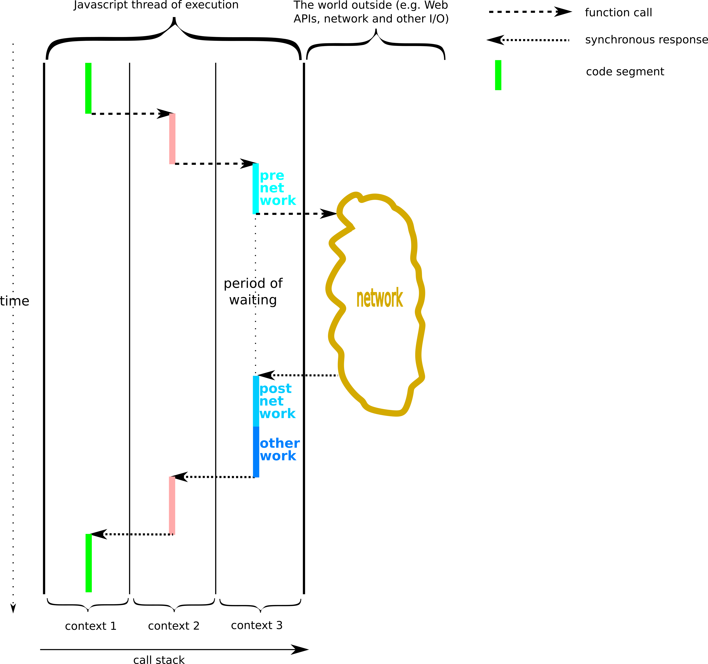
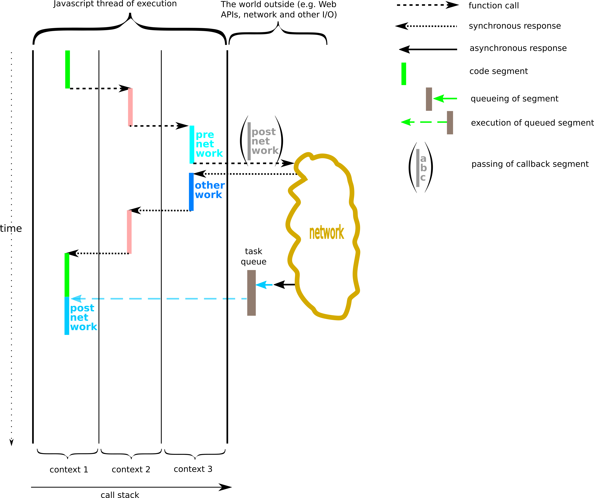
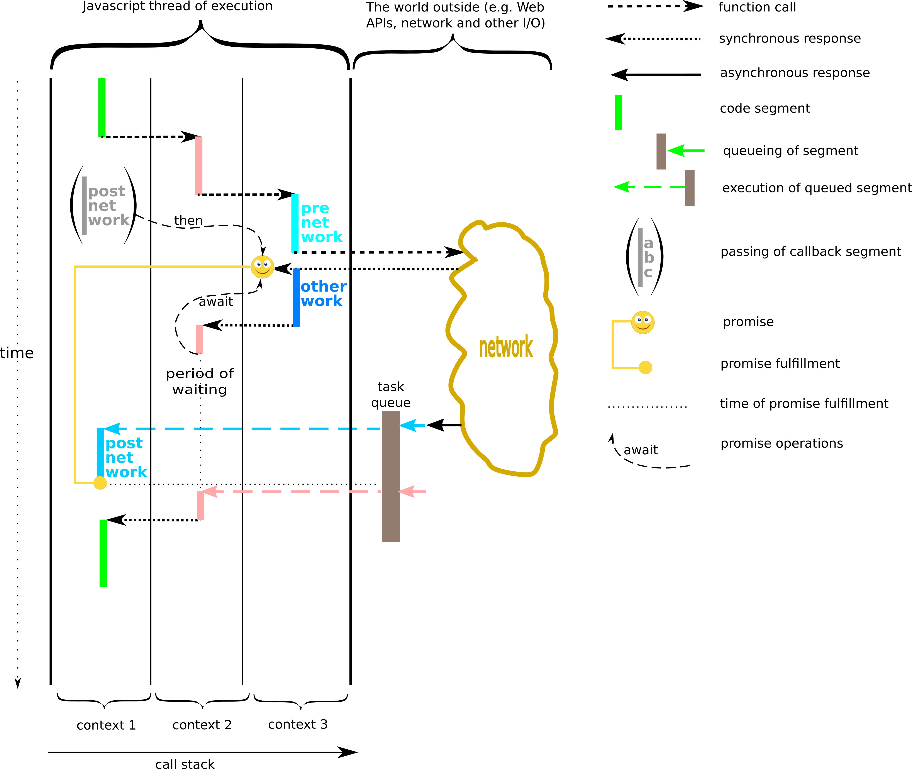

-
Synchronous programming
Synchronous programming
Fully synchronous program execution 
- In the picture above, the function in context 1 calls function in context 2, which in turn calls function in context 3.
- The function in context 3 makes a network call (but this could be anything that takes time outside of the Javascript thread of execution).
- A synchronous call involves waiting for the called function to return (like what the function in context 3 does).
- Synchronous programming would not be a problem if all functions called did not take long to return.
- However, if the thread of execution is blocked, this can have a serious impact on user experience, since nothing can happen on the page during the wait: parts of the page may not be rendered and user input is not handled.
The synchronous nature of JavaScript
Copy the example of a long-running function given below into the console and run it. How long does it take?
Example of a long-running function function longRunning() { x = 0; while (Date.now() > x) { x += 10000; } console.log("Finished") }Now incorporate this function into a page with a button that allows the user to run the page and another button that posts an alert. Also, modify the function so that instead of printing to the console, it writes 'Finished' onto the page. Click the first button, then the second button. The second button will be blocked until 'Finished' appears on the page, because the JavaScript engine can run only one thing at a time (it has a single thread of execution).
-
Asynchronous programming with callbacks
Asynchronous programming with callbacks
Execution of a program with an asynchronous call and the use of a callback 
- In the picture above, the call to the network is asynchronous and returns immediately.
- The asynchronous call takes a callback function as an argument.
- When the work requested by the network call is completed and an asynchronous response comes in (black left-directed arrow), the callback code is queued for execution and executes once the thread of execution is free.
- This pattern allows the thread of execution to be utilised while long-lasting external work is taking place.
- This article on MDN gives details on how to program using callbacks.
Callbacks in JavaScript
One typical functionality in JavaScript that works with a callback function is setting a timer. The timer is set and a callback function provided, then when the timer runs out, the callback function is called. Copy the following code into the console and run it. Notice the delay.
Timeout with a callback function setTimeout(() => { console.log("Now 2s have passed"); }, 5000)Next, incorporate the function into your webpage, modified to print to the page rather than the console and with a button to start it. Click the button to start it, then try to interact with the button that posts the alert. Notice that it is not blocked - this is due to the setTimeout call being asynchronous.
Write three more calls to the timeout function, each to be made only once the previous timeout has completed, and test it. Notice the structure of the code - it is hard to read (and write!).
-
Asynchronous programming with promises
Asynchronous programming with promises
Execution of a program with an asynchronous call and the use of a promise 
- The picture above shows a case of using an asynchronous call that returns a promise.
- An object called a promise is returned from the asynchronous call.
- The callback in this case is still used but rather than passed into the asynchronous call, it is attached to the promise (with the then method).
- The await operator allows parts of the program to be syncrhonised with the completion of the asynchronous call.
- Both then and await can be used by any code that has a reference to the promise. This need not be the code that makes the asynchronous call.
- Also, asynchronous calls can easily be chained using the then method (not shown in the picture).
- These features of the promise mechanism offer more flexibility and ease of use to the programmer than conventional callbacks, especially in cases where many asynchronous operations depend on each other.
- For further information, see articles on MDN about using promises and about the promise type and objects.
Promises in JavaScript
One typical asynchronous function in JavaScript is fetch. When called, it returns a promise. Copy and run the following code snippet in the console. Also try the file 'fetch2.json'.
Using the fetch function let fetchPromise = fetch("https://jelena-vk-itt.github.io/jvk-tudt-notes/rwat/res/files/fetch1.json");The treatment of the promise when it is fulfilled is specified with a call to then, which also returns a promise. Thus 'then' calls can be chained to transform information through a sort of a pipeline. Copy and run the code from the following snippet, then try to chain one or more calls to 'then'.
Using the method then fetchPromise.then(result => { console.log(result.json()); });The required treatment of promise when it has encoutered an exception is provided in a catch method call on the promise.
Using the method catch fetchPromise.then(result => { console.log(result.json()); }).catch(error) { console.log(error); }There are two more keywords relating to asynchronous programming in JavaScript: await and async. The former is used to de-asynchronise code, while async is used as a modifier on a function definition to allow asynchronous code inside a function.
-
Synchronous programming
-
Asynchronous programming with callbacks
-
Asynchronous programming with promises